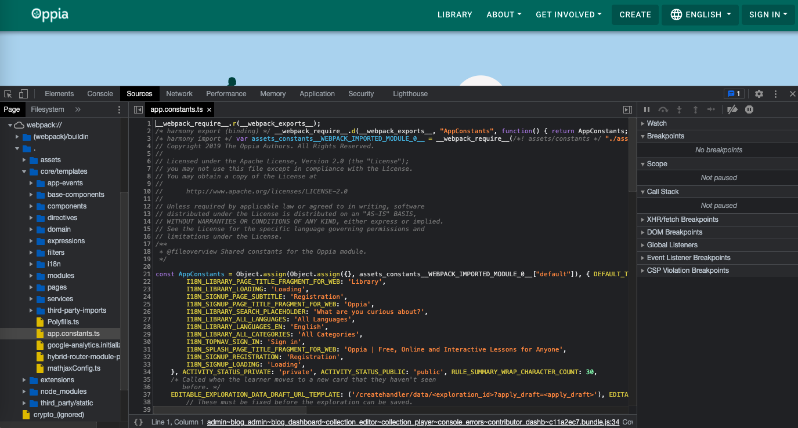
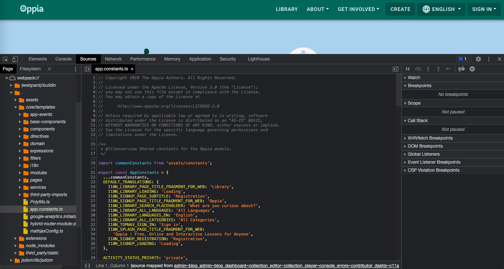

Build process
Table of contents
Introduction
Before we can run the Oppia server, we have to build it. This build process transforms the files defining our application (e.g. code, images, configuration files, etc.) from the developer-friendly format we store in GitHub into a form that can be executed to run the server. If you are running the local development server, this build process makes minimal changes, but when deploying to production, we do much more optimization.
This page documents how the build process works in each of its modes. Most of the time, you won’t have to worry about the build process since it is handled automatically by our scripts like start.py. However, you might need to consider the build process if you have trouble reproducing a bug; the bug might only happen in certain build modes. We’ll discuss how to think about build modes when debugging below.
Build script
The build process is performed by scripts/build.py. If you ever want to know exactly how a particular part of the build process works, you should check out the code there.
Build modes
There are two primary build modes: dev mode and prod mode. When running in prod mode, you can also enable maintenance mode or deploy mode, or you can choose to only minify third-party libraries. This means the build mode hierarchy looks like this:
Dev mode
Minify-only mode
Prod mode
Maintenance mode
Deploy mode
Note that the maintenance and deploy modes can be enabled simultaneously, so you should really think of them as flags. For example, suppose you have decided to enable prod mode. You can further choose to enable maintenance mode, enable dev mode, enable both maintenance mode and dev mode, or leave both maintenance mode and dev mode disabled.
Dev mode compiles the fastest, but it produces an application that’s least like what we run in production. On the other hand, prod mode takes longer to compile but produces an application that is the closest to what we run in production. Minify-only mode is in the middle.
We use prod mode for most everything besides local development. For example, we use prod mode when deploying to production and testing servers, and we run most tests in prod mode. A notable exception is the lighthouse accessibility tests, which run in dev mode because they don’t depend on the minifications and optimizations applied in prod mode, and dev mode compilation is faster. Note that we also sometimes use prod mode locally when debugging to run a version of the app that’s closer to the deployed version.
Build mode constants
The build mode affects the application during runtime through the following constants in assets/constants.ts:
DEV_MODE: Set totrueif and only if we are in dev mode. Otherwise, this isfalse.EMULATOR_MODE: Set totrueif and only if we are not in deploy mode. Note that being in deploy mode implies being in prod mode. Otherwise, this isfalse.ENABLE_MAINTENANCE_MODE: Set totrueif and only if we are in maintenance mode. Note that being in maintenance mode implies being in prod mode. Otherwise, this isfalse.
Dev mode
We use dev mode for local development. For example, when you run python -m scripts.start, you build the app in dev mode. This mode is designed to build as quickly as possible, so it doesn’t do much optimization.
Here’s what happens during a dev mode build:
Some third-party libraries are generated. If you recently ran the server, then there might not be much to change here. Otherwise, the third-party libraries from
manifest.jsonare downloaded. (Note that the libraries inmanifest.jsonare just some of our frontend libraries; we have other libraries that get installed tonode_modules.) The downloaded CSS and JavaScript code files are combined intothird_party/generated/third_party.cssandthird_party/generated/third_party.js, and the downloaded fonts are placed inthird_party/webfonts/.The build script sets the constants in
assets/constants.tsto enable dev mode. Specifically,DEV_MODEistrue,EMULATOR_MODEistrue, and the other constants arefalse.Webpack bundles our frontend code files and runs with a dev configuration designed for minimal compilation time. Note that the dev mode configuration file inherits from the root webpack config file. In dev mode, webpack runs in “watch” mode so that when files are changed, webpack re-builds the app automatically.
Note that this step is not handled by
build.pyfor two reasons:When we run the frontend tests, webpack has to be handled by Karma, not
build.py.When we run in dev mode, we need to keep webpack running so that it can watch for changes to the code. However, we don’t want to keep
build.pyrunning sincebuild.pyis supposed to build the application and then exit. Therefore, we leave webpack compilation to be handled by whatever script you actually executed, for examplestart.py.
The
app_dev.yamlconfiguration file for the app already exists, so it doesn’t need to be generated.
Minify-only mode
In this mode, the third-party libraries are installed and minified, but the build script doesn’t do anything else. This is only used by the frontend tests, where the karma.conf.ts configuration file triggers webpack as described above for dev mode.
Prod mode
In prod mode, we more aggressively optimize the app for performance, but the cost of this optimization is that the build process takes longer. Prod mode is also a little more complicated because it has two additional options: maintenance mode, and deploy mode.
Plain prod mode
First, let’s consider what happens in plain prod mode where those two options are both disabled:
The third-party libraries are generated like in dev mode, but they are also minified so they take up less space.
Hashes are generated for asset files like images. These will be used later (see step 5 below).
Webpack runs with watch mode disabled and a prod configuration optimized for application performance.
app.yamlis generated fromapp_dev.yaml. The two files are identical in plain prod mode, except for a comment inapp.yamlnoting that it is auto-generated.The third-party libraries, assets, files compiled by webpack, and some other files are all copied to a build folder
build/. This mimics the build folder we generate and upload to production servers when deploying the app for real. During this process, asset files are renamed to include the hashes we generated earlier. This ensures that if the file content changes, the name changes, so any caches of the old file are invalidated.
This is the mode our tests run in (except the lighthouse accessibility tests), and it’s what you’ll want to use if you want to locally run a version of the app that’s as close to the production version as possible. You can use this mode like this:
python -m scripts.start --prod_env
Maintenance mode
As far as the build process is concerned, maintenance mode works just like plain prod mode except that the ENABLE_MAINTENANCE_MODE constant gets set to true. Then when the app runs, only admins can log in. We use this when we are upgrading the production server and need to let jobs run while ensuring users don’t change any data.
This mode is used by our deployment scripts. You can also enable it locally like this:
python -m scripts.start --prod_env --maintenance_mode
Deploy mode
Deploy mode is also very similar to plain prod mode, except that the EMULATOR_MODE constant is set to false. Further, we make some changes to the app.yaml file:
Remove the
version: defaultlineRemove the environment variables specified in the
ENV_VARS_TO_REMOVE_FROM_DEPLOYED_APP_YAMLconstant inbuild.py. We remove these since they are already present in the production environment.
This mode is used by our deployment scripts.
Considering build modes when debugging
Most bugs appear in all build modes, so we recommend first trying to reproduce bugs locally in dev mode. Dev mode is optimized for fast compilation, so it’s usually faster to debug in dev mode. If you can’t reproduce the bug in dev mode, then you can try using plain prod mode. Plain prod mode takes longer to compile, but since it more closely mimics how the application works in production, you may need it for bugs that don’t appear in dev mode.
You should only need to use maintenance mode if you are debugging a problem with the mode or testing it. You can’t use deploy mode locally, so bugs specific to deploy mode can only be debugged on a testing server. Finally, we only use the minify-only mode mode for the frontend tests, so you shouldn’t ever need to run a server this way for debugging. You should just debug the frontend tests directly.
Source maps
Even when running in dev mode, the code your browser runs does not look much like the code on your file system. Files have been combined, and in prod mode, they’ve been minified. To make debugging easier, you can generate source maps that map from the code your browser is running back to the code on your file system.
Generating source maps is expensive, so by default we don’t make them. However, you can enable source map generation in both dev and prod modes, usually by passing a --source_maps, for example:
python -m scripts.start --source_maps
python -m scripts.run_e2e_tests --prod_env --source_maps
With these flags, the webpack.*.sourcemap.config.ts configuration files are used to enable source mapping.
Using source maps
When generated, source maps will automatically be available through the Chrome debugger. You can view the Oppia code under webpack:// in the sidebar of the sources tab. Without source maps the code looks like this:

With source maps enabled, the code is easier to read:
